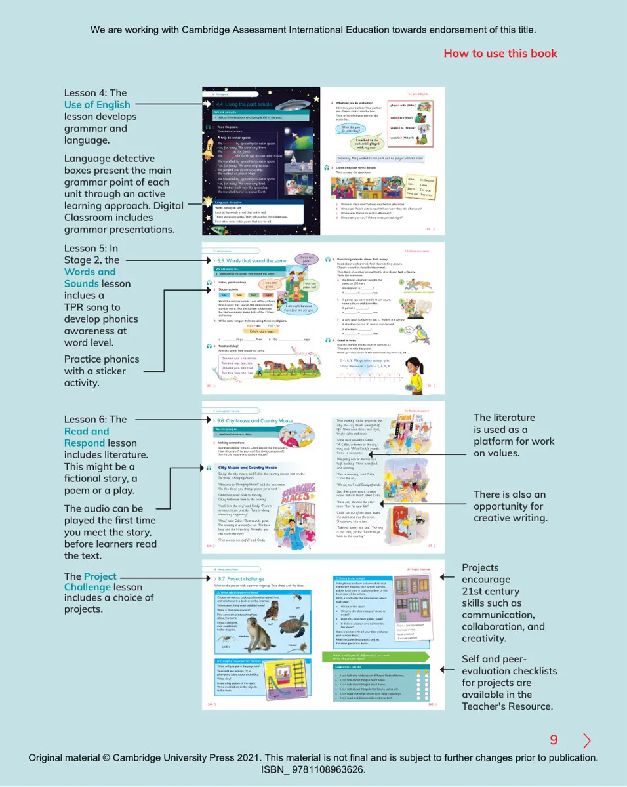

70712 What did you do yesterday?Interview your partner. Your partner can choose verbs from the box.Then write what your partner did yesterday. 4.4 Using the past simpleWe are going to…• talk and write about what people did in the past.1 Read the poem.Then do the actions.A trip to outer spaceWe travelled by spaceship to outer space,Far, far away. We were very brave.We waved at the Earth.We watched the Earth get smaller and smaller.We travelled by spaceship to outer space,Far, far away. We were very excited.We jumped out of the spaceship.We walked on planet Mars.We travelled by spaceship to outer space,Far, far away. We were very tired.We climbed back into the spaceship.We travelled home to planet Earth.474.4 Use of EnglishVerbs ending in -edLook at the words in red that end in -ed. Those words are verbs. They tell us what the children did.Find other verbs in the poem that end in -ed.Language detectiveplayed with (Who?) talked to (Who?) walked to (Where?) watched (What?) What did you do yesterday?I walked to the park and I played with my sister.3 Listen and point to the picture.Then answer the questions.48aWhere is Paco now? Where was he this afternoon? bWhere are Paco’s sisters now? Where were they this afternoon?cWhere was Paco’s mum this afternoon?dWhere are you now? Where were you last night?Yesterday, Peng walked to the park and he played with his sister.Now In the pastI am I wasShe is She was They are They were4 The big sky3 Listen and point to the picture.Then answer the questions.48aWhere is Paco now? Where was he this afternoon?bWhere are Paco’s sisters now? Where were they this afteNowI amSheThey9How to use this bookLesson 4: The Use of Englishlesson develops grammar and language.Language detective boxes present the main grammar point of each unit through an active learning approach. Digital Classroom includes grammar presentations.Lesson 5: In Stage 2, the Words and Sounds lesson inclues a TPR song to develop phonics awareness at word level.Practice phonics with a sticker activity.5 Let’s measure885 Describing animals: clever, fast, heavyRead about each animal. Find the matching picture.Choose a word to describe the animal.Then think of another animal that is also clever, fast or heavy.Write the sentences.aAn African elephant weighs the same as 100 men.An elephant is !A is too.bA parrot can learn to talk. It can count, name colours and do maths.A parrot is !A is too.c A very good runner can run 12 metres in a second.A cheetah can run 30 metres in a second.A cheetah is !A is too.6 Count in twos. Use the number line to count in twos to 12.Then join in with the poem.Make up a new verse of the poem starting with ‘22, 24 …’6162 5.5 Words that sound the sameWe are going to…• read and write words that sound the same.1 Listen, point and say.2 Sticker activity595.5 Words and soundsonetwofoureightRead the number words. Look at the pictures. Find a word that sounds the same as each number word. Put the number stickers on the Numbers page (page 166) of the Picture dictionary.3 Write some tongue-twisters using these word pairs.eight – atefour – foraflags Fran.bEd eggs.4 Read and sing!Find the words that sound the same.602, 4, 6, 8. Mary’s at the cottage gate.Eating cherries on a plate – 2, 4, 6, 8.1230123456789101112One-one was a racehorse.Two-two was one, too.One-one won one race.Two-two won one, too.89acehorse.e, too.e race.e, too.Ed ate eight eggs.I won two prizes.I won one prizes.I ate eight bananas these four are for you. I won one prizes too!9 Let’s explore the city! 156157 9.6 City Mouse and Country MouseWe are going to…• read and discuss a story.9.6 Read and respondThat evening, Callie arrived in the city. The city streets were full of life. There were shops and cafes, bright lights and music.Some mice waved to Callie. ‘Hi Callie, welcome to the city,’ they said. ‘We’re Cindy’s friends. Come to our party.’The party was at the top of a high building. There were food and dancing.‘This is amazing,’ said Callie. ‘I love the city.’‘We do, too!’ said Cindy’s friends.Just then there was a strange noise. ‘What’s that?’ asked Callie.‘It’s a cat,’ shouted the other mice. ‘Run for your life!’Callie ran out of the door, down the stairs and into the street. She jumped into a taxi.‘Take me home,’ she said. ‘The city is too scary for me. I want to go back to the country.’City Mouse and Country MouseCindy, the city mouse, and Callie, the country mouse, met on the TV show, Changing Places.‘Welcome to Changing Places!’ said the announcer.‘On this show, you change places for a week.’Callie had never been to the city.Cindy had never been to the country.‘You’ll love the city,’ said Cindy. ‘There is so much to see and do. There is always something happening.’‘Wow,’ said Callie. ‘That sounds great. The country is wonderful too. The bees buzz and the birds sing. At night, you can count the stars.’‘That sounds wonderful,’ said Cindy.109nnouncer.ek.’151 Making connectionsSome people like the city. Other people like the country.How about you? As you read this story, ask yourself,‘Am I a city mouse or a country mouse?’y Mousee country.orselfLesson 6: The Read and Respond lesson includes literature. This might be a fictional story, a poem or a play. The audio can be played the first time you meet the story, before learners read the text.The literature is used as a platform for work on values.There is also an opportunity for creative writing. The Project Challenge lesson includes a choice of projects.Projects encourage 21st century skills such as communication, collaboration, and creativity.Self and peer-evaluation checklists for projects are available in the Teacher's Resource.8 Home, sweet home 8.7 Project challenge144145C: Doors in our schoolTake photos or draw pictures of at least 5 different doors in your school such as a door to a room, a cupboard door or the front door of the school.Write a card with this information about each door:• Where is this door?• What is this door made of: wood or metal?• Does this door have a door knob? • Is there a window or a number on this door?Make a poster with all your door pictures and number them. Read out your descriptions and let the class guess the doors. 8.7 Project challengeWork on the project with a partner or group. Then share with the class. A: Write about an animal homeChoose an animal. Look up information about that animal’s home in a book or on the Internet.Where does the animal build its home?What is the home made of?Find some other interesting facts about the home.Draw a diagram. Add word labels to the diagram.This is a door to a cupboard.It is made of wood.It has a doorknob.It is in our classroom.nternet.me?nteresting factsantspiderturtleowlmousemonkeyWhat would you do differently if you were to do this project again?Look what I can do!• I can talk and write about different kinds of homes.• I can talk about things I do at home.• I can talk about things I do at home.• I can talk about things in the future, using will.• I can read and write words with long u spellings.• I can read and discuss informational text.B: Design a playroom for childrenWhat will you put in the playroom?You could put: a huge TV, a ping-pong table, ropes and slides.What else?Draw a big picture of the room. Write word labels on the objects in the room.televisionslideladderturtleWe are working with Cambridge Assessment International Education towards endorsement of this title.Original material © Cambridge University Press 2021. This material is not final and is subject to further changes prior to publication. ISBN_ 9781108963626.